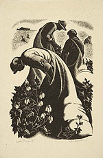

Clare Veronica Hope Leighton
British, 1898-1989
Although known primarily for her work as a printmaker, Clare Leighton
also designed numerous book illustrations, bookplates, engravings,
illustrations, mosaics, and stained glass windows over the course
of a long and productive career. She wrote seven books, among them
Four
Hedges: A Gardener's Chronicle, illustrated with her own prints,
and a treatise on wood engraving, her forté. She received
her early training at the Brighton College of Art and also attended
the Slade School of Fine Art and the Central School of Art and Design
in London. During the 1920s and 1930s she taught, exhibited, and
made several lecture tours of the United States. At the outbreak
of World
War II, she moved to America, and in 1945 became an American citizen.
A teaching position at Duke University in 1943 brought her into contact
with Professor Frank C. Brown's pioneering effort to collect
North Carolina folklore. Eventually, the project grew to seven published
volumes, all of which Leighton illustrated. Though some might have
considered her an "outsider" in the matter of Southern
folkways, she took her work seriously, making a research trip to
the North Carolina mountains in 1946, where the customs, music, dance,
and crafts of the early Scottish and Irish settlers still permeated
the culture. Her sensitive, unsentimental
portrayals
of the difficult lives of African Americans in the United
States are evident in the Cotton Pickers, shown below.

Cotton Pickers, 1941
Wood engraving
Signed in pencil, lower right
Graphic Arts Division
Wood-Engraving and Woodcuts, by Clare Leighton.
London: The Studio, 1932.
Graphic Arts Division
Other works in the exhibition:
- The Frank C. Brown Collection of North Carolina Folklore
. . . collected during the years 1912 to 1943, in collaboration
with
the North Carolina Folklore Society, with wood engravings
by Clare Leighton.
Durham, North Carolina: Duke University Press, 1952-64.
Firestone Library
- Original engraved wood block by Clare Leighton of an unidentified
subject.
Graphic Arts Division